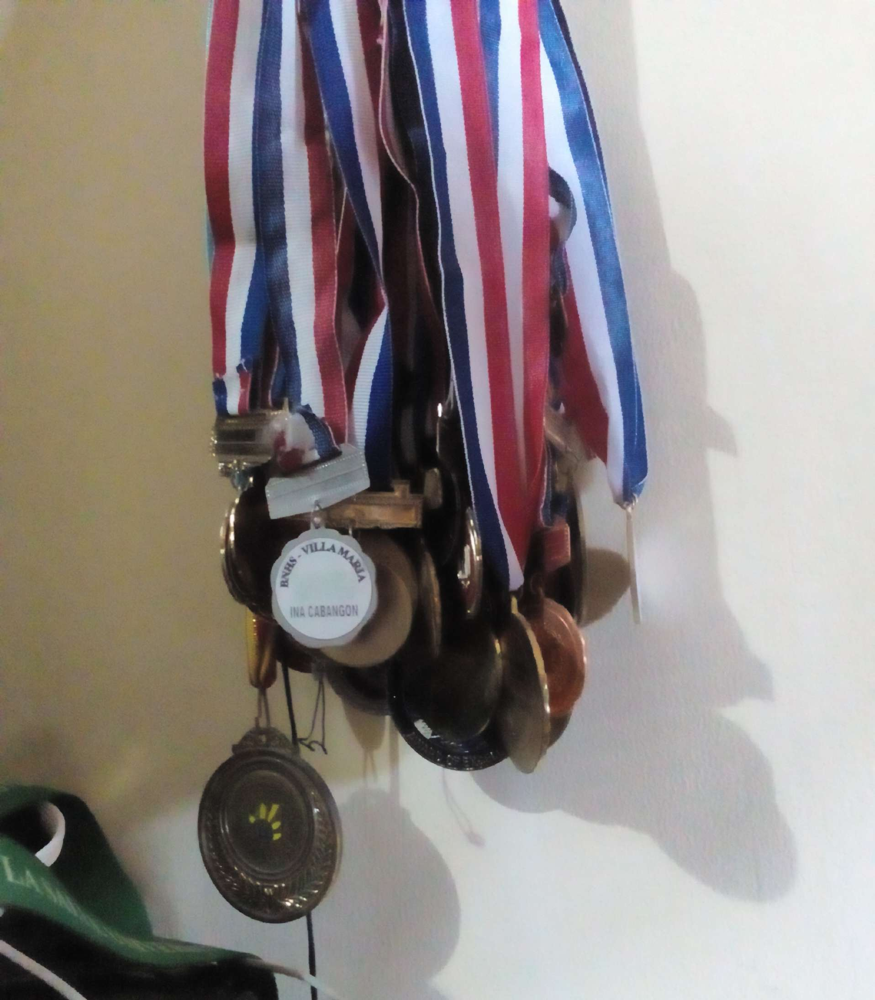
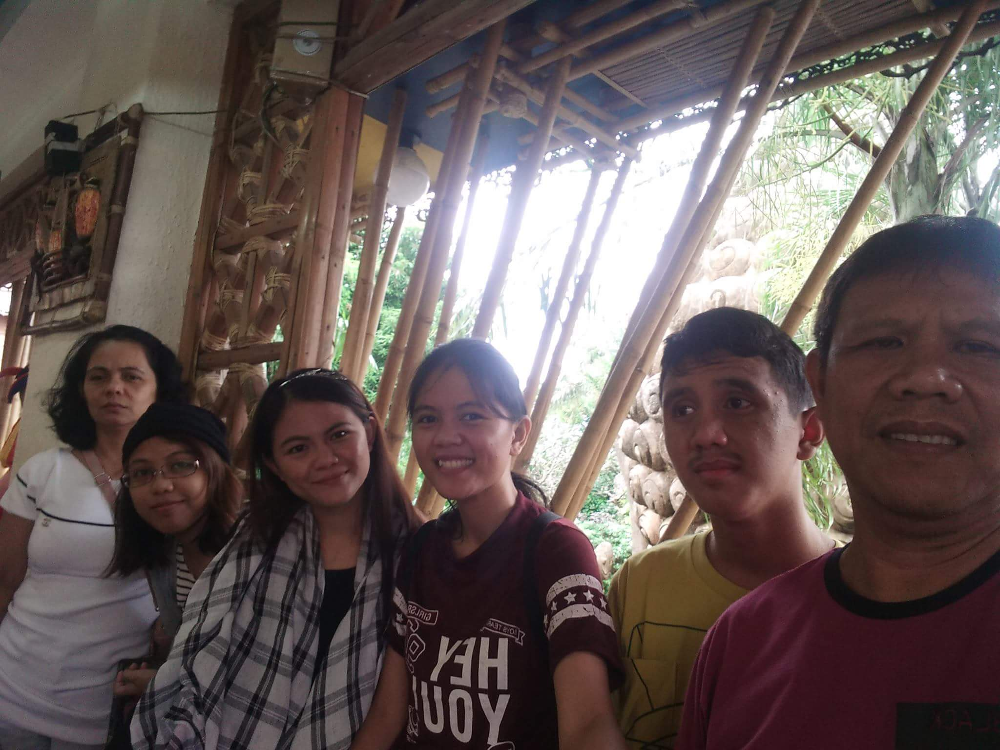

In life, we may experience bliss and hardships. That’s why it is essential that we have people around us who we share our experiences and emotions. These people are the one who change us into a better or worse person, though selecting the right ones is a difficult thing to do. Still, they are at our side to make the burdens lighter. Family is the first one we count on when we need help as they are readily available. Selected friends are also there for us in times of need. There’s also God who guide us everyday. The people who surrounds me makes who I am today.
The bond that links your true family is not one of blood, but of respect and joy in each other's life
- Richard Bach
 My family is composed of my mother who is a housewife, my father who is the one mainly supporting us financially, and their four children, which are us. I have two sisters older than me and they both finished studying, while my youngest sibling is in grade 9. The common thing among us is that we are all achievers. The medals in the picture at the side are the fruit of our hard work and continuous support of our parents. The details below are the short description of my family members, but only the thing they consented to reveal.(See also: Friends )
Mom- She is a housewife who take care of us ever since. She may be strict, perfectionist, and over protective sometimes, but she shape us into a fine adult/adolescent.
Dad- The one who mainly support us financially, my father is a cool dad. He always challenges our critical thinking by throwing random questions sharing his knowledge to us.
1st sister- She takes up Accountancy in college and now she is a CPA (certified public accountant). She is a good artist especially in drawing. She is my idol who influenced me to draw anime characters.
2nd sister- Unlike my other sister, she takes up Computer Science. She is an independent woman who always gives me tips related to practicality, which I apply to my everyday life.
Brother- The only boy in the family aside from my father. He is currently in Grade 9 studying in a certain special school. He is so tall that they often mistaken me as the youngest in the family.

There is nothing on this earth more to be prized than true friendship
-Thomas Aquinas
Since I am quite introverted, my friends are limited in numbers. My closest and most trusted ones can only be counted with the fingers. But this people accompanied me with every event in my life that I cannot forget. They also go along with my changing mood every day. The people listed below are some of those who made an impact to my life: (see also: Family)